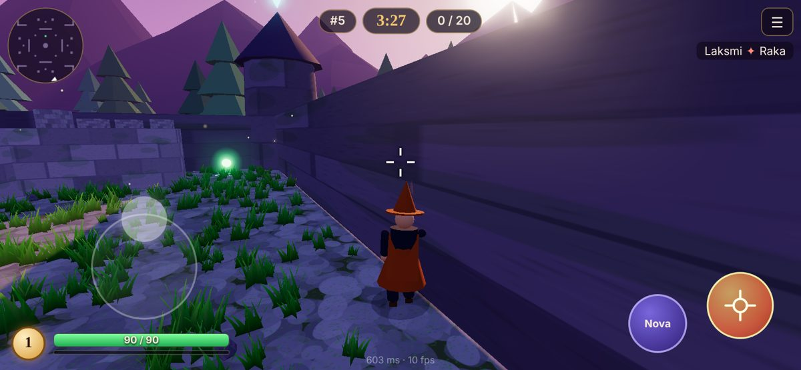

Game, server, uji otomatis, image Docker, dan APK sudah jadi. Server sudah berjalan di dockerlab pada port 18080. Yang belum terbukti adalah tunnel ke arkana.idxsignal.com, dan pengaturan Public Hostname terakhir yang kamu laporkan (arkana:18080) salah. Itu satu-satunya penghalang sebelum APK bisa dibagikan.
Urut sesuai ketergantungan: langkah berikutnya tidak berarti apa-apa sebelum langkah sebelumnya lolos.
Setiap baris menyebut bukti yang benar-benar ada, bukan yang diharapkan.
| Komponen | Status | Bukti | Catatan |
|---|
Deathmatch PvP orang-ketiga, mobile-first, maksimal 8 pemain per room, bot mengisi sampai 6. Pemenang: pertama mencapai 20 kill atau skor tertinggi setelah 5 menit.
Lapisan RPG: XP dari damage dan kill, level 1 sampai 5 (+8% damage dan +12 HP per level), bola penyembuh 40 HP, pemulihan HP setelah 5 detik tanpa terkena.

Enam commit di atas main, semuanya di PR #2.